GodSaveTheScreen
Bildschirmfotos aufnehmen, verständlich beschriften und in Sekunden weitergeben – mit Formen, Pfeilen, Text, Sprechblasen, Nummern, Unschärfe, Lupe, Stempeln und vielem mehr.
Willkommen
GodSaveTheScreen ist ein Werkzeug für Bildschirmfotos unter Windows. Es läuft unauffällig im Infobereich der Taskleiste, nimmt per Tastenkürzel einen Bildschirmbereich auf und öffnet das Ergebnis in einem Editor. Dort legen Sie Objekte – Rahmen, Pfeile, Texte, Markierungen – über das Bild. Das Bild selbst bleibt dabei unverändert: Jedes Objekt lässt sich bis zum Schluss verschieben, ändern oder löschen.
Diese Anleitung folgt dem Weg eines Bildschirmfotos: vom Aufnehmen über das Bearbeiten im Editor mit seinen Werkzeugen bis zum Speichern und Weitergeben. Die Kapitel Einstellungen, Tastenkürzel und Tipps und Problemlösung dienen zum Nachschlagen.
Der Arbeitsablauf in drei Schritten
Aufnehmen
Tastenkürzel drücken (Standard Strg+Umschalt+1), Bereich aufziehen – fertig.
Beschriften
Im Editor mit Pfeilen, Text, Nummern oder Unschärfe das Wesentliche zeigen.
Weitergeben
Kopieren, als Bild speichern, in ein anderes Programm ziehen oder als Projekt sichern.
Hilfe an jeder Stelle: F1 öffnet diese Anleitung. Umschalt+F1 springt direkt zum Abschnitt über das gerade gewählte Werkzeug, die ausgewählten Objekte oder die geöffnete Einstellungsseite.
Erste Schritte
Installation und portabler Modus
GodSaveTheScreen gibt es mit Setup oder als ZIP-Archiv. Das Programm besteht aus einer einzigen Datei GodSaveTheScreen.exe, die die .NET-Laufzeit bereits enthält. Diese Anleitung liegt als GodSaveTheScreen-Hilfe.html (Deutsch) bzw. GodSaveTheScreen-Help.html (Englisch) daneben.
Mit Setup: GodSaveTheScreen-…-Setup.exe starten und Installieren wählen. Unter Optionen legen Sie fest, ob GodSaveTheScreen Nur für mich (ohne Administratorrechte, nach %LOCALAPPDATA%\Programs) oder Für alle Benutzer dieses Computers (nach „Programme“) installiert wird, in welchen Ordner (Durchsuchen) und ob eine Verknüpfung im Startmenü entsteht. Bei Updates sind Ordner und Startmenü-Wahl der vorhandenen Installation vorbelegt. „Mit Windows starten“ stellen Sie danach in den Einstellungen ein. Das Setup verknüpft Projektdateien (.gsts) mit dem Editor. Deinstallieren über Einstellungen → Apps; Ihre Einstellungen und Sicherungen bleiben dabei erhalten. Für die Softwareverteilung in Firmen gibt es zusätzlich ein MSI-Paket (siehe Verteilung in Firmen).
Als ZIP (ohne Installation):
- ZIP-Archiv in einen beliebigen Ordner entpacken.
- GodSaveTheScreen.exe starten.
- Zeigt Windows „Der Computer wurde durch Windows geschützt“, auf Weitere Informationen → Trotzdem ausführen klicken (die EXE ist nicht signiert).
Einstellungen liegen standardmäßig in %APPDATA%\GodSaveTheScreen, Protokolle und automatische Sicherungen in %LOCALAPPDATA%\GodSaveTheScreen.
Portabler Modus: Legen Sie eine leere Datei portable.txt neben die EXE. Dann speichert GodSaveTheScreen alle Daten im Ordner data daneben – praktisch für USB-Sticks.
Das Programm im Infobereich
Nach dem Start läuft GodSaveTheScreen im Infobereich der Taskleiste (rechts unten neben der Uhr) weiter, auch wenn alle Fenster geschlossen sind. Beim allerersten Start erklärt ein Begrüßungsfenster die wichtigsten Tastenkürzel.
- Linksklick auf das Symbol startet eine Aufnahme (Standard: Rechteck; einstellbar unter Allgemein).
- Rechtsklick öffnet das Menü: Aufnahmemodi, Mit Timer, Bild öffnen…, Zuletzt verwendet, Startfenster, Einstellungen, Hilfe und Beenden.
Zuletzt verwendete Dateien erscheinen außerdem in der Sprungliste des Programms in der Taskleiste.
Das Startfenster
Das Startfenster ist der klassische Einstieg mit der Maus. Es erscheint beim Programmstart (sofern nicht „Minimiert im Infobereich starten“ eingeschaltet ist) und lässt sich jederzeit über das Tray-Menü öffnen.
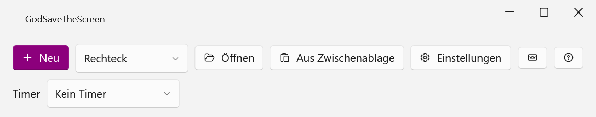
| Element | Funktion |
|---|---|
| Neu + Modus | Startet eine Aufnahme im gewählten Modus: Rechteck, Fenster, Freiform, Vollbild (aktueller Monitor) oder Vollbild (alle Monitore). |
| Öffnen | Öffnet Bilder oder Projekte (.gsts) im Editor. |
| Aus Zwischenablage | Öffnet das Bild aus der Zwischenablage im Editor (auch Strg+V). |
| Einstellungen | Öffnet die Einstellungen. |
| Tastatur-Symbol | Übersicht aller Tastenkürzel (Strg+F1). |
| Fragezeichen | Diese Hilfe (F1). |
| Timer | Verzögert die nächste Aufnahme (siehe Timer). |
| Zuletzt verwendet | Liste mit Vorschaubildern; Doppelklick oder Eingabe öffnet, Entf entfernt einen Eintrag. Die Liste erscheint, sobald Dateien geöffnet oder gespeichert wurden. |
Sie können Bilddateien auch einfach auf das Startfenster ziehen, um sie im Editor zu öffnen.
Die erste Aufnahme in einer Minute
- Strg+Umschalt+1 drücken. Der Bildschirm wird eingefroren und abgedunkelt.
- Mit gedrückter linker Maustaste den gewünschten Bereich aufziehen und loslassen.
- Der Editor öffnet sich mit der Aufnahme. Taste A drücken und einen Pfeil ziehen, mit T einen Text schreiben.
- Strg+C kopiert das fertige Bild – jetzt z. B. in eine E-Mail oder einen Chat einfügen. Oder Strg+S zum Speichern.
Aufnehmen
Eine Aufnahme starten Sie über ein globales Tastenkürzel, das Tray-Symbol, das Startfenster oder im Editor über Neu. Sobald die Aufnahme beginnt, friert GodSaveTheScreen den Bildschirm ein – Menüs und Tooltips bleiben also sichtbar, während Sie den Bereich wählen. Eigene Fenster von GodSaveTheScreen erscheinen nicht in der Aufnahme.
Aufnahmemodi
| Modus | Standard-Kürzel | So geht's |
|---|---|---|
| Rechteck | Strg+Umschalt+1 | Rechteckigen Bereich mit gedrückter Maustaste aufziehen. |
| Fenster | Strg+Umschalt+2 | Das Fenster unter dem Mauszeiger wird hervorgehoben; ein Klick nimmt es auf. Ziehen wählt stattdessen einen freien Bereich. |
| Freiform | Strg+Umschalt+3 | Mit gedrückter Maustaste eine beliebige Form um den Bereich zeichnen (Lasso). Außerhalb der Form wird das Bild transparent. |
| Vollbild | Strg+Umschalt+4 | Nimmt sofort den Monitor auf, auf dem sich der Mauszeiger befindet. Im Startfenster gibt es zusätzlich „Vollbild (alle Monitore)“. |
Bereich auswählen
Während der Auswahl liegt eine abgedunkelte Ebene über allen Monitoren. Der gewählte Bereich erscheint hell, seine Größe wird in Pixeln angezeigt. Eine Lupe am Mauszeiger hilft beim pixelgenauen Ansetzen (abschaltbar unter Aufnahme).
| Taste | Wirkung |
|---|---|
| Esc | Aufnahme abbrechen |
| Eingabe | Aktuellen Bereich übernehmen |
| ← → ↑ ↓ | Auswahl um 1 Pixel verschieben, mit Umschalt um 10 Pixel |
Timer
Mit dem Timer lässt sich die Aufnahme verzögern – etwa um vorher ein Menü aufzuklappen. Wählen Sie im Startfenster unter Timer eine Wartezeit oder Benutzerdefiniert… mit beliebigen Sekunden. Im Tray-Menü gibt es dafür Mit Timer. Ein Countdown zeigt die verbleibende Zeit; auf Wunsch ertönt in den letzten drei Sekunden ein Ton. Den Standard-Timer für Tastenkürzel und Tray legen Sie unter Aufnahme fest.
Tastenkürzel und Druck-Taste
Die globalen Tastenkürzel funktionieren in jedem Programm. Sie lassen sich unter Einstellungen → Tastenkürzel ändern. Ist eine Kombination bereits von Windows oder einem anderen Programm belegt, wird das dort angezeigt.
Druck-Taste: Unter Windows 11 öffnet die Taste Druck normalerweise das Snipping Tool. Um sie GodSaveTheScreen zuzuweisen, schalten Sie zuerst in Windows unter Einstellungen → Barrierefreiheit → Tastatur die Option „Druck-Taste zum Öffnen der Bildschirmaufnahme verwenden“ aus.
Was nach der Aufnahme passiert
Nach jeder Aufnahme führt GodSaveTheScreen die Schritte aus, die Sie unter Nach der Aufnahme eingestellt haben – in dieser Reihenfolge:
- In die Zwischenablage kopieren – das Bild ist sofort einfügbar.
- Automatisch speichern – in einen festen Ordner mit Dateinamensmuster; eine Benachrichtigung zeigt den Speicherort (Klick öffnet den Ordner).
- Im Editor öffnen – zum Beschriften (Standard).
Der Editor
Im Editor beschriften Sie die Aufnahme. Jede Aufnahme und jede geöffnete Datei bekommt ein eigenes Editorfenster. Alles, was Sie hinzufügen, sind eigenständige Objekte über dem Bild – das Originalbild wird nie verändert.
Aufbau des Fensters
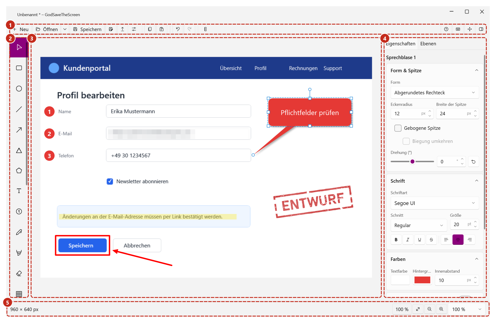
- Befehlsleiste – Neu, Öffnen, Speichern, Exportieren, Kopieren, Einfügen, Rückgängig, Lineal und rechts Hilfe, Tastenkürzel, Bild herausziehen, Eigenschaftenbereich ein/aus (Details).
- Werkzeugleiste – alle Werkzeuge; jedes hat einen Ein-Buchstaben-Kürzel.
- Zeichenfläche – das Bild mit allen Objekten (Zoom und Verschieben).
- Eigenschaftenbereich – Einstellungen des Werkzeugs bzw. der Auswahl und die Ebenen.
- Statusleiste – Bildgröße, Mausposition in Pixeln und Zoom.
Befehlsleiste

| Schaltfläche | Funktion |
|---|---|
| Neu | Menü: neue Aufnahme (Rechteck, Fenster, Freiform, Vollbild) oder Aus Zwischenablage. |
| Öffnen ▾ | Datei öffnen (Strg+O); der Pfeil zeigt die zuletzt verwendeten Dateien. |
| Speichern | Speichert (Strg+S), daneben Speichern unter… (Strg+Umschalt+S) – siehe Speichern. |
| Exportieren | Ergebnis als Bilddatei exportieren, ohne den Projektstand zu ändern (Exportieren). |
| Speicheroptionen | Format, Qualität und Hintergrund für transparente Bereiche (Details). |
| Kopieren / Einfügen | Bild kopieren bzw. einfügen (Zwischenablage). |
| Rückgängig / Wiederholen | Strg+Z / Strg+Y |
| Lineal | Blendet das Lineal ein (Strg+R). |
| Hilfe | Diese Anleitung (F1). |
| Tastenkürzel | Übersicht aller Kürzel mit Suchfeld (Strg+F1). |
| Ziehpunkt | Das fertige Bild mit der Maus in ein anderes Programm ziehen (Drag & Drop). |
| Eigenschaftenbereich | Blendet die rechte Seitenleiste ein oder aus. |
Zeichenfläche, Zoom und Verschieben
- Zoomen: Strg + Mausrad (der Punkt unter dem Mauszeiger bleibt stehen), Strg++ / Strg+-, oder das Zoomfeld in der Statusleiste.
- Einpassen (Strg+0) zeigt das ganze Bild, 100 % (Strg+1) die Originalgröße.
- Verschieben: Leertaste gedrückt halten und ziehen – oder mit gedrückter mittlerer Maustaste ziehen.
- Über den Rand hinaus: Ragen Objekte über das Bild hinaus, wächst die Zeichenfläche mit. Der zusätzliche Bereich wird als Schachbrett angezeigt und ist im gespeicherten PNG transparent (JPG/BMP: weiß).
Lineal
Das virtuelle Lineal (Strg+R) hilft beim Zeichnen gerader Linien mit Stift und Textmarker: Beginnen Sie den Strich nahe an der Linealkante, rastet er an der Kante ein.
- Lineal verschieben: auf das Lineal klicken und ziehen.
- Drehen: Mausrad über dem Lineal (1°), mit Umschalt 15°, mit Strg 0,1°.
- Rechtsklick auf das Lineal: Winkel direkt setzen oder Lineal ausblenden.
Eigenschaftenbereich
Rechts im Editor sehen Sie die Einstellungen. Was dort steht, hängt davon ab, was gerade aktiv ist:
- Ein Zeichenwerkzeug, nichts ausgewählt: Überschrift Standardwerte: …. Die Werte gelten für alle neuen Objekte dieses Werkzeugs und bleiben auch nach einem Neustart erhalten.
- Objekte ausgewählt: Die Werte gelten für die Auswahl. Änderungen werden gleichzeitig zum neuen Standard des Werkzeugs.
Die Einstellungen sind in Karten gegliedert, z. B. Darstellung, Schrift, Kontur, Schatten. Ein Klick auf den Kopf klappt eine Karte auf oder zu; zugeklappt zeigt der Kopf eine Kurzfassung (Farbe, Stärke). Der Auf-/Zu-Zustand wird gemerkt und gilt für alle Werkzeuge.
Effekte wie Kontur, Schatten, Hintergrund und Leuchten haben einen Ein/Aus-Schalter im Kopf. Beim Einschalten werden die zuletzt genutzten Werte wiederhergestellt.
Zahlenfelder ändern Sie per Eingabe, mit den kleinen Pfeilen, mit ↑/↓, Bild auf/Bild ab oder dem Mausrad (wenn das Feld den Fokus hat).
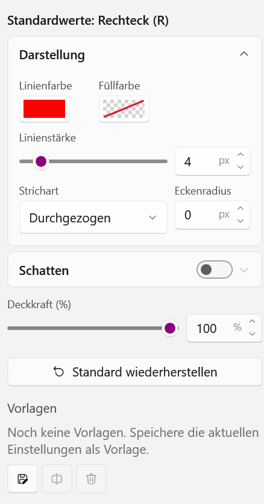
Vorlagen und Standardwerte
Am Ende des Eigenschaftenbereichs stehen die Vorlagen des Werkzeugs – gespeicherte Kombinationen aller Einstellungen, z. B. „roter Warnrahmen“ oder „gelbe Notiz“.
- Speichern: Diskettensymbol – speichert die aktuellen Einstellungen unter einem Namen (gleicher Name = überschreiben, nach Rückfrage).
- Anwenden: Klick auf eine Vorlage – ohne Auswahl wird sie zum Standard des Werkzeugs, mit Auswahl wird sie auf die ausgewählten Objekte übertragen.
- Umbenennen und Löschen über die Schaltflächen daneben. Für Text gibt es mitgelieferte Vorlagen (Beschriftung, Warnung, Notiz, Hinweis), die sich wiederherstellen lassen.
Standard wiederherstellen (nur sichtbar, wenn nichts ausgewählt ist) setzt alle Einstellungen des Werkzeugs auf die eingebauten Werte zurück. Vorlagen bleiben dabei erhalten.
Farben und Pipette
Ein Klick auf ein Farbfeld öffnet die Farbauswahl mit Farbfläche, Hex-Wert (#RRGGBB oder mit Deckkraft #AARRGGBB), Palette und zuletzt verwendeten Farben. Keine macht die Farbe transparent (z. B. Rechteck ohne Füllung).
Mit der Pipette („Farbe aus dem Bild aufnehmen“) klicken Sie auf eine Stelle des Bildes, um genau diese Farbe zu übernehmen. Esc bricht ab.
Objekte bearbeiten
Mit dem Auswahlwerkzeug (V) wählen, verschieben und ändern Sie vorhandene Objekte. Die wichtigsten Handgriffe:
| Aktion | So geht's |
|---|---|
| Auswählen | Klick auf das Objekt; mehrere mit Umschalt oder Strg + Klick oder durch Aufziehen eines Rahmens; Strg+A wählt alle. |
| Nächstes / vorheriges | Tab / Umschalt+Tab (Fokus auf der Zeichenfläche) |
| Verschieben | Ziehen; Pfeiltasten um 1 px, mit Umschalt um 10 px. |
| Größe ändern | An den Griffen ziehen (Umschalt = Seitenverhältnis); Alt+Pfeiltasten um 1 px (mit Umschalt 10 px). |
| Drehen | Runder Griff über der Auswahl (Umschalt = 15°-Schritte) oder [ / ]; im Panel unter Drehung. |
| Text bearbeiten | Doppelklick auf Text, Sprechblase oder Stempel; beenden mit Strg+Eingabe, Esc oder Klick daneben. |
| Duplizieren | Strg+D |
| Löschen | Entf |
| Reihenfolge | Strg+] eine Ebene nach vorn, Strg+[ nach hinten, mit Umschalt ganz nach vorn/hinten. |
| Kontextmenü | Rechtsklick: Ausschneiden, Kopieren, Einfügen, Als Bildobjekt einfügen, Bild einfügen…, Duplizieren, Löschen, Reihenfolge, Sperren. |
| Sperren | Gesperrte Objekte lassen sich nicht versehentlich verschieben (Kontextmenü oder Schloss in den Ebenen). |
Objekte lassen sich mit Strg+C und Strg+V auch zwischen zwei Editorfenstern kopieren.
Ebenen
Der Reiter Ebenen im Eigenschaftenbereich listet alle Objekte – oben liegt das vorderste. Die Liste ist mit der Zeichenfläche verbunden: Ein Klick wählt das Objekt aus.
- Auge – Objekt aus- und einblenden (ausgeblendete Objekte erscheinen auch nicht im gespeicherten Bild).
- Schloss – Objekt sperren bzw. entsperren.
- Ziehen – ändert die Reihenfolge (vorne/hinten).
- Doppelklick auf den Namen – umbenennen.
Objekte außerhalb eines Zuschnitts sind in der Liste gekennzeichnet; sie sind im Ergebnis nicht sichtbar.
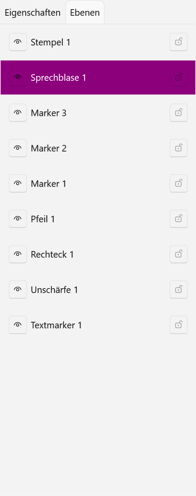
Rückgängig und Wiederholen
Jede Änderung – auch Zuschneiden und das Entfernen von Bildbereichen – lässt sich mit Strg+Z rückgängig machen und mit Strg+Y (oder Strg+Umschalt+Z) wiederholen. Mehrere schnell aufeinanderfolgende Änderungen am selben Wert werden zu einem Schritt zusammengefasst.
Werkzeuge
Ein Werkzeug wählen Sie in der Werkzeugleiste links oder mit seiner Taste. Mit Umschalt+F1 öffnet sich die Hilfe direkt beim gewählten Werkzeug. Beim Aufziehen gilt fast überall: Umschalt hält Proportionen (Quadrat, Kreis, 15°-Winkel), Alt zeichnet von der Mitte aus.
| Werkzeug | Taste | Wofür | |
|---|---|---|---|
| Auswählen | |||
| Auswahl | V | Objekte wählen, verschieben, ändern | |
| Formen und Linien | |||
| Rechteck | R | Rahmen, Flächen, abgerundete Ecken | |
| Ellipse | E | Einkreisen | |
| Linie | L | Gerade Linien | |
| Pfeil | A | Auf etwas zeigen | |
| Dreieck | G | Warn- und Richtungszeichen | |
| Polygon | P | Beliebige Vielecke | |
| Beschriften | |||
| Text | T | Beschriftungen | |
| Nummerierter Marker | M | Schritte 1, 2, 3 … | |
| Sprechblase | K | Text mit Spitze | |
| Stempel | S | „GENEHMIGT“, „ENTWURF“ … | |
| Emoji | J | Farbige Emojis | |
| Bild | I | Logos, Symbole, weitere Bilder | |
| Freihand | |||
| Stift | B | Freihand zeichnen | |
| Textmarker | H | Text hervorheben | |
| Radierer | X | Striche entfernen | |
| Verbergen und hervorheben | |||
| Unschärfe, Verpixeln, Schwärzen | U | Vertrauliches unkenntlich machen | |
| Lupe | Z | Details vergrößern | |
| Bild bearbeiten | |||
| Bereich auswählen und entfernen | W | Teile des Screenshots transparent machen | |
| Hintergrundradierer | D | Transparenz malen | |
| Zuschneiden | C | Bildausschnitt festlegen | |
 Auswahl V
Auswahl V
Das Auswahlwerkzeug ist das Standardwerkzeug zum Bearbeiten vorhandener Objekte. Alle Handgriffe – Auswählen, Verschieben, Größe ändern, Drehen, Reihenfolge – sind im Abschnitt Objekte bearbeiten beschrieben. Einige Objekte haben zusätzliche Griffe:
- Sprechblase: runder Griff an der Spitze – Spitze frei ziehen.
- Lupe: Quelle und vergrößerte Ansicht lassen sich getrennt verschieben.
- Polygon: jeder Eckpunkt ist ein Griff; Doppelklick auf eine Kante fügt einen Punkt ein.
- Pfeil/Linie: Griffe an Anfang und Ende (Umschalt rastet auf 15° ein).
Bei ausgewählten Objekten zeigt der Eigenschaftenbereich deren Werte. Umschalt+F1 öffnet die Hilfe zum Typ der ausgewählten Objekte.
Formen
Formen ziehen Sie mit gedrückter Maustaste auf. Umschalt erzeugt ein Quadrat bzw. einen Kreis, Alt zeichnet von der Mitte aus.
Gemeinsame Einstellungen in der Karte Darstellung:
- Linienfarbe und Füllfarbe (Keine = nur Rahmen)
- Linienstärke und Strichart (durchgezogen, gestrichelt, gepunktet, Strichpunkt)
- Deckkraft des ganzen Objekts
- Schatten mit Farbe, Größe (Versatz nach rechts unten) und Unschärfe
- Drehung (bei ausgewählten Objekten)

 Rechteck R
Rechteck R
Für Rahmen um wichtige Stellen oder halbtransparente Flächen. Zusätzlich: Eckenradius für abgerundete Ecken.
Ellipse E
Zum Einkreisen. Mit Umschalt entsteht ein Kreis.
Dreieck G
Gleichschenkliges Dreieck im aufgezogenen Rahmen – drehbar für Richtungszeichen.
Polygon P
- Für jeden Eckpunkt einmal klicken (Umschalt rastet den Winkel auf 15° ein).
- Rücktaste entfernt den letzten Punkt.
- Doppelklick oder Eingabe schließt das Polygon, Esc bricht ab.
Später verschieben Sie einzelne Eckpunkte mit dem Auswahlwerkzeug; ein Doppelklick auf eine Kante fügt einen Punkt hinzu.
Linien und Pfeile
Linie und Pfeil ziehen Sie vom Anfangs- zum Endpunkt. Umschalt rastet den Winkel auf 15°-Schritte ein, Alt zeichnet vom Mittelpunkt aus.
- Anfang und Ende: keine Spitze, Pfeil, offener Pfeil, Kreis oder Quadrat – unabhängig für beide Enden.
- Linienfarbe, Linienstärke, Strichart, Deckkraft
- Kontur mit Farbe, Stärke und Unschärfe – ein Rand um Linie und Spitzen, damit sie auf jedem Hintergrund gut lesbar sind.
- Schatten
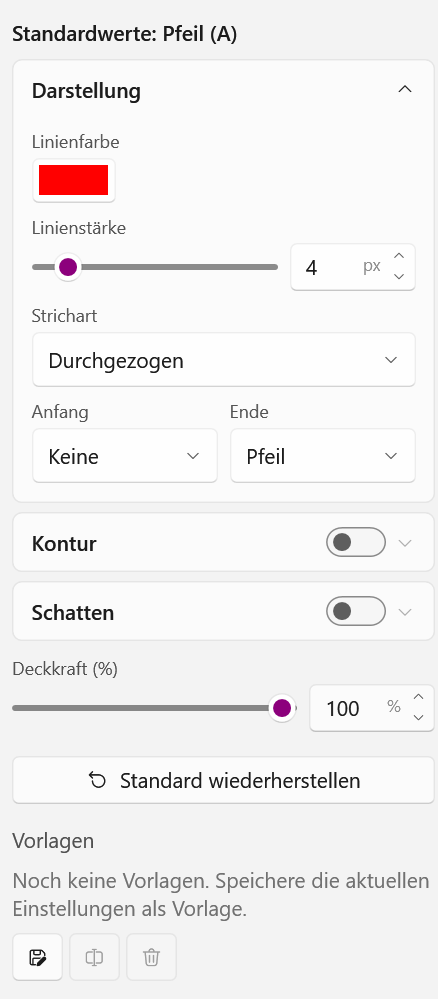
Linie L
Gerade Linie ohne Spitzen (Spitzen lassen sich nachträglich hinzufügen).
Pfeil A
Linie mit Pfeilspitze am Ende. Linie und Pfeil haben getrennte Standardwerte.
 Text T
Text T
- Klick setzt einen Text, der mit jeder Zeile wächst.
- Ziehen erzeugt ein Textfeld mit fester Breite und automatischem Zeilenumbruch.
- Text direkt auf der Zeichenfläche tippen; Eingabe beginnt eine neue Zeile, Strg+Eingabe oder Esc beendet die Eingabe.
- Doppelklick auf einen vorhandenen Text bearbeitet ihn.
Einstellungen:
- Schrift: Schriftart, Schnitt, Größe, Fett, Kursiv, Unterstrichen, Durchgestrichen, Ausrichtung
- Textfarbe
- Kontur mit Farbe, Stärke und weicher Kante (Kontur-Unschärfe)
- Hintergrund mit Farbe und Innenabstand – wie ein Etikett
- Schatten, Deckkraft, Drehung
Mitgelieferte Vorlagen: Beschriftung, Warnung, Notiz und Hinweis.
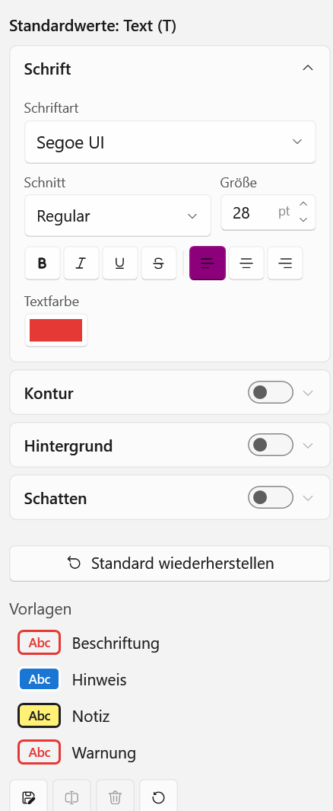
 Sprechblase K
Sprechblase K
- Rahmen der Blase aufziehen (ein einfacher Klick erzeugt eine Blase in Standardgröße).
- Text eingeben – er wird umbrochen und mittig gesetzt; passt er nicht, wächst die Blase nach unten. Strg+Eingabe oder Esc beendet die Eingabe.
- Mit dem Auswahlwerkzeug den runden Griff an der Spitze auf das Ziel ziehen. Die Spitze wandert dabei automatisch auf die passende Seite der Blase.
Einstellungen:
- Form & Spitze: abgerundetes Rechteck (mit Eckenradius), Ellipse oder Gedankenblase; Breite der Spitze, Gebogene Spitze und Biegung umkehren; Drehung
- Schrift wie beim Text
- Farben: Textfarbe, Hintergrund, Innenabstand
- Leuchten: farbiger Rahmen außen um Blase und Spitze, mit Breite und Unschärfe
- Schatten, Deckkraft, Vorlagen
Eckgriffe ändern nur die Größe der Blase (die Schrift bleibt, der Text wird neu umbrochen). Beim Verschieben wandert die Spitze mit.
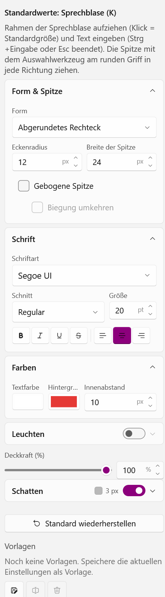
Stempel S
Ein Stempel ist ein einfarbiger Rahmen mit Text im Look eines echten Gummistempels – ideal für „GENEHMIGT“, „ENTWURF“ oder „VERTRAULICH“.
- Auf die Zeichenfläche klicken – der Stempel erscheint mit markiertem Text.
- Eigenen Text tippen (mehrzeilig möglich) oder einen Text der Schnellauswahl im Panel wählen.
- Strg+Eingabe oder Esc beendet die Eingabe.
- Farbe und Rahmen: Rechteck, abgerundet, Doppelrahmen, Oval; Rahmenstärke
- Stempel-Look: ausgefranste Kanten, Fehlstellen, Sprenkel, Kratzer; Neu würfeln erzeugt ein anderes Muster
- Neigung (Standard −8°), Schrift mit Fett/Kursiv/Unter- und Durchstreichung
- Tinten-Look: Farbe wird mit dem Bild multipliziert, als wäre echte Tinte aufgedrückt
- Deckkraft
Ein Stempel passt sich der Textlänge an. Ziehen an einem Eckgriff skaliert Rahmen und Schrift gemeinsam. Der zuletzt gestempelte Text wird zum Standardtext.
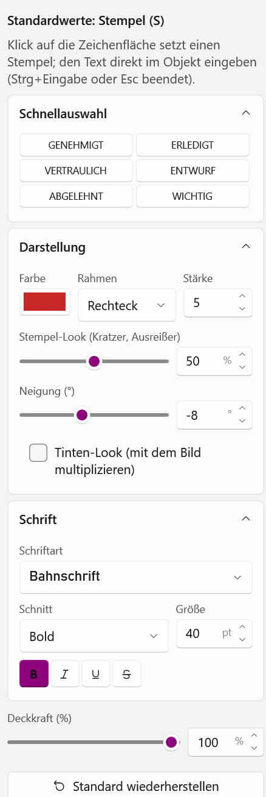
 Nummerierter Marker M
Nummerierter Marker M
Marker nummerieren Arbeitsschritte: Jeder Klick setzt die nächste freie Nummer. Ziehen erzeugt zusätzlich eine Spitze, die auf den Zielpunkt zeigt.
- Form: Kreis, Quadrat, abgerundet; Größe
- Füllfarbe, Zahlenfarbe, Randfarbe
- Startnummer für neue Marker
- Neu nummerieren nach Ebenenreihenfolge oder nach Erstellreihenfolge – nützlich, nachdem Marker gelöscht wurden
- Schatten
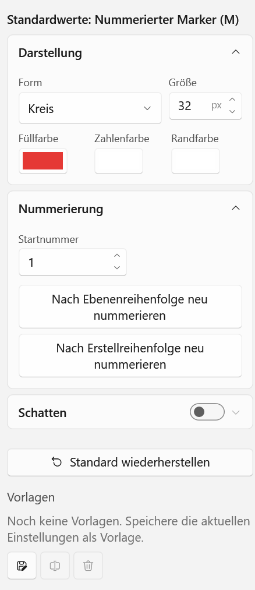
Freihand
 Stift B
Stift B
Zeichnen Sie mit gedrückter Maustaste oder mit einem Grafikstift. Jeder Strich wird ein eigenes Objekt.
- Farbe, Linienstärke, Deckkraft
- Glättung – beruhigt zittrige Striche
- Stiftdruck steuert die Breite – bei Grafiktabletts
Mit eingeblendetem Lineal entstehen gerade Striche.
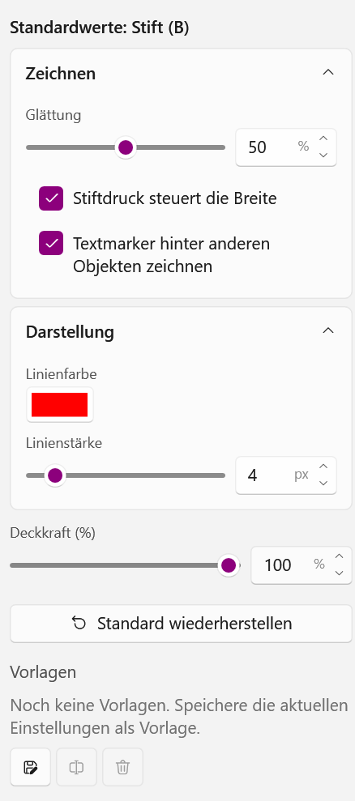
 Textmarker H
Textmarker H
Wie der Stift, aber breit und halbtransparent – zum Hervorheben von Text. Die Option Textmarker hinter anderen Objekten zeichnen legt alle Textmarker-Striche des Dokuments unter die übrigen Objekte.
 Radierer X
Radierer X
Ziehen Sie über Striche, um sie zu entfernen; beim Loslassen werden alle markierten Striche gelöscht (ein Rückgängig-Schritt). Mit Alle Objekte radieren, nicht nur Striche entfernt der Radierer jedes berührte Objekt.
Der Radierer entfernt Objekte. Um Teile des Screenshots selbst transparent zu machen, nutzen Sie den Hintergrundradierer.
Unschärfe, Verpixeln, Schwärzen U
Machen Sie Namen, E-Mail-Adressen oder Kennwörter unkenntlich: Bereich aufziehen (Umschalt = Quadrat). Der Bereich bleibt ein Objekt und lässt sich verschieben oder in der Größe ändern.
- Modus: Verpixeln, Weichzeichnen oder Schwärzen (deckend, mit Farbe)
- Stärke / Blockgröße in Pixeln
- Form: Rechteck oder Ellipse; Weicher Rand
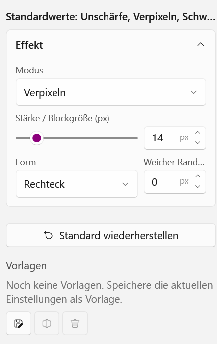
Sicherheit: Leichtes Weichzeichnen lässt sich teilweise rückgängig rechnen. Verwenden Sie für sensible Daten Schwärzen. Geben Sie außerdem immer das exportierte Bild weiter, nicht die Projektdatei: Das Projekt enthält das unveränderte Original.
 Lupe Z
Lupe Z
Die Lupe zeigt einen Bildausschnitt vergrößert an einer anderen Stelle. Ziehen Sie den Quellbereich auf; die vergrößerte Ansicht erscheint daneben. Mit dem Auswahlwerkzeug verschieben Sie Quelle und Lupe unabhängig voneinander.
- Vergrößerung, Form (Kreis oder Rechteck), Rahmen
- Verbindung anzeigen – Linien zwischen Quelle und Lupe
- Quellrahmen anzeigen
- Nur Basisbild vergrößern – ohne die Objekte darüber
- Glatte Skalierung – aus: Pixel bleiben scharf sichtbar
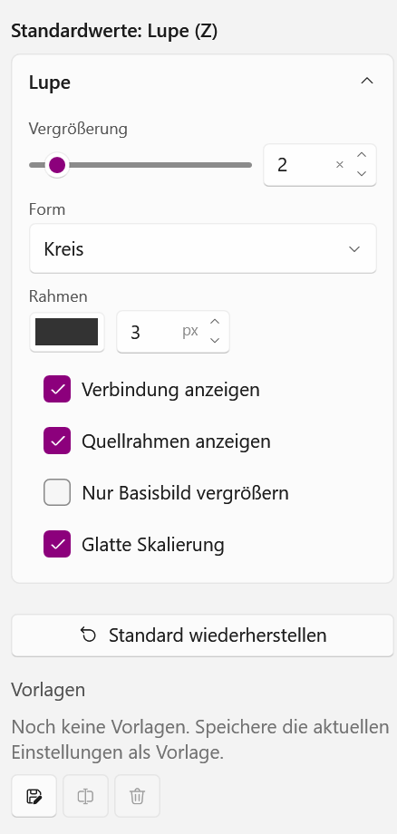
 Emoji J
Emoji J
Fügen Sie farbige Emojis ein – alle Windows-Emojis außer Länderflaggen.
- Im Panel ein Emoji suchen (Deutsch oder Englisch) oder über Kategorien, Zuletzt verwendet und Favoriten wählen. Den Hautton stellen Sie darüber ein.
- Auf die Zeichenfläche klicken (Standardgröße) oder einen Bereich aufziehen (Umschalt = frei, Alt = von der Mitte). Doppelklick oder Eingabe in der Auswahl fügt in der Bildmitte ein.
Ist ein Emoji ausgewählt, tauscht ein Klick in der Auswahlliste es aus. Emojis lassen sich drehen ([ / ]), spiegeln (Umschalt+H / Umschalt+V) und mit Deckkraft und Schatten versehen. Per Rechtsklick auf ein Emoji der Auswahl fügen Sie es zu den Favoriten hinzu oder entfernen es wieder.
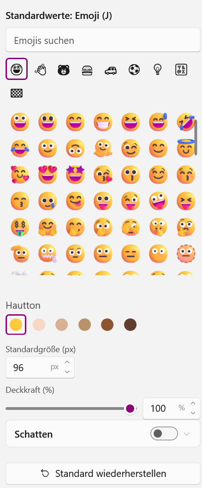
Bild I
Fügen Sie weitere Bilder als Objekte ein – Logos, Symbole, Fotos oder SVG-Grafiken.
- Klick öffnet die Dateiauswahl und setzt das Bild in Originalgröße (höchstens 80 % des Screenshots).
- Bereich aufziehen passt das Bild proportional in den Bereich ein.
- Bilddatei auf die Zeichenfläche ziehen fügt sie an dieser Stelle ein.
- Strg+Umschalt+V fügt ein Bild oder eine kopierte Bilddatei aus der Zwischenablage als Objekt ein.
- Bild aus Datei einfügen… im Panel oder im Kontextmenü.
Animierte GIFs und mehrseitige TIFFs fragen nach dem gewünschten Einzelbild. SVG-Grafiken bleiben bei jedem Zoom scharf.
Einstellungen: Größe mit Seitenverhältnis beibehalten, Originalgröße, Originalverhältnis; Drehung, Spiegeln, Kontur (folgt den nicht transparenten Bildteilen), Schatten und Deckkraft.
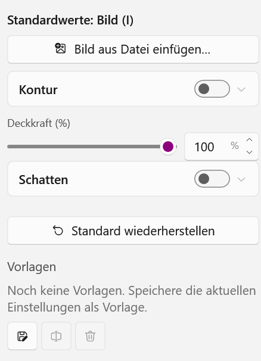
Aus Sicherheitsgründen laden SVG-Grafiken keine externen Dateien oder Internetadressen nach; solche Inhalte erscheinen grau.
Bildbereiche entfernen (Freistellen)
Diese beiden Werkzeuge machen Teile des Screenshots transparent – etwa um ein Fenster freizustellen oder störenden Hintergrund zu entfernen. Objekte darüber bleiben unberührt. Die Änderung ist nicht endgültig: Alles lässt sich mit Ganzen Screenshot wiederherstellen zurückholen. Transparente Stellen sind im PNG durchsichtig; JPG und BMP füllen sie weiß (bzw. mit dem Hintergrund aus den Speicheroptionen).
 Bereich auswählen und entfernen W
Bereich auswählen und entfernen W
- Auswahlform wählen: Rechteck, Ellipse, Freihand (Lasso) oder Zauberstab (wählt zusammenhängende ähnliche Farben, mit Farbtoleranz).
- Bereich aufziehen bzw. klicken. Umschalt fügt zur Auswahl hinzu, Alt zieht ab.
- Entf oder Bereich entfernen macht den Bereich transparent – optional mit Weicher Kante.
Weitere Befehle: Auswahl umkehren (Strg+Umschalt+I) – praktisch, um alles außer dem gewählten Bereich zu entfernen –, Alles auswählen, Auswahl aufheben, Auf sichtbaren Bereich zuschneiden.
Die Bereichsauswahl selbst ist kein Objekt; sie wird beim Werkzeugwechsel aufgehoben.
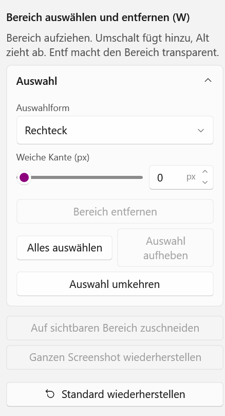
 Hintergrundradierer D
Hintergrundradierer D
Malen Sie über den Screenshot, um diese Stellen transparent zu machen. Mit gedrückter Alt-Taste malen Sie die Stellen wieder zurück.
- Größe des Pinsels (auch mit [ / ])
- Härte – weiche oder harte Pinselkante
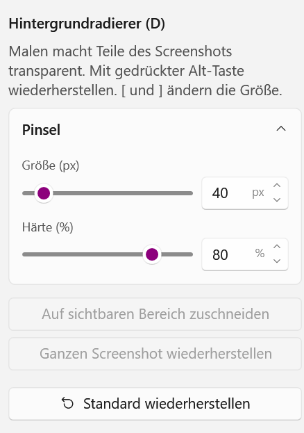
 Zuschneiden C
Zuschneiden C
Im Zuschnittmodus legen Sie den sichtbaren Bildausschnitt fest. Das Zuschneiden ist nicht endgültig: Das ganze Bild bleibt erhalten, und Sie können den Ausschnitt später wieder vergrößern.
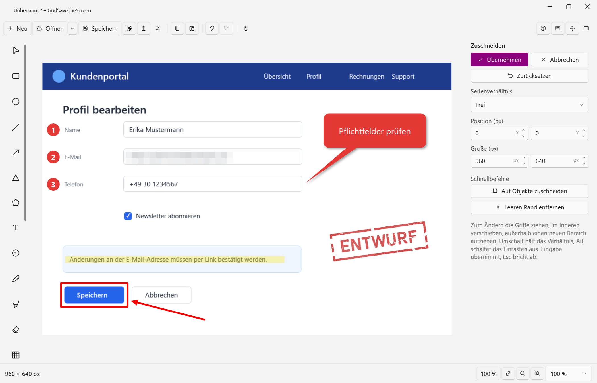
- Griffe ziehen ändert die Größe, Ziehen im Inneren verschiebt den Rahmen, Ziehen außerhalb zieht einen neuen Bereich auf.
- Umschalt hält beim Ziehen das Seitenverhältnis, Alt schaltet das Einrasten an Kanten aus, Pfeiltasten verschieben um 1 px.
- Seitenverhältnis: Frei, Original, 1:1, 4:3, 3:2, 16:9, 9:16 oder benutzerdefiniert.
- Position und Größe in Pixeln exakt eingeben.
- Schnellbefehle: Auf Objekte zuschneiden (nur der Bereich mit Objekten) und Leeren Rand entfernen (einfarbigen Rand abschneiden).
- Übernehmen bzw. Eingabe beendet den Modus, Abbrechen bzw. Esc verwirft die Änderung, Zurücksetzen wählt wieder das ganze Bild.
Speichern und weitergeben
Für das fertige Ergebnis gibt es mehrere Wege – je nachdem, ob Sie das Bild sofort weitergeben, als Datei ablegen oder später weiterbearbeiten möchten.
Speichern
Strg+S speichert dorthin, woher das Dokument stammt: ein geöffnetes Projekt wieder als Projekt, eine geöffnete Bilddatei wieder als Bild. Bei einer neuen Aufnahme fragt ein Dialog nach Ort und Dateityp – zuerst angeboten wird das Projektformat. Strg+Umschalt+S (Speichern unter…) fragt immer.
Beim Schließen eines Editors mit ungespeicherten Änderungen fragt GodSaveTheScreen nach: Speichern, Als Projekt speichern, Nicht speichern oder Abbrechen.
Exportieren und Speicheroptionen
Exportieren… schreibt das Ergebnis als Bilddatei, ohne dass das Dokument dadurch zu dieser Datei wird – ideal, wenn Sie am Projekt weiterarbeiten. Das Bild enthält alle sichtbaren Objekte und den Zuschnitt.
Die Speicheroptionen (Regler-Symbol in der Befehlsleiste) legen fest:
- Format: PNG, JPEG, BMP, GIF, TIFF oder JPEG XR
- Qualität (JPEG, JPEG XR), Interlaced (PNG), Kompression (TIFF), Verlustfrei (JPEG XR)
- Hintergrund für transparente Bereiche bei Formaten ohne Transparenz
Öffnen können Sie alle Bildformate, die Windows kennt.
Zwischenablage
| Taste | Wirkung |
|---|---|
| Strg+C | Mit Auswahl: die ausgewählten Objekte kopieren (zum Einfügen in einem Editor). Ohne Auswahl: das fertige Bild kopieren. |
| Strg+Umschalt+C | Immer das fertige Bild kopieren. |
| Strg+X | Ausgewählte Objekte ausschneiden. |
| Strg+V | Kopierte Objekte einfügen; enthält die Zwischenablage ein Bild, öffnet es sich in einem neuen Editorfenster. |
| Strg+Umschalt+V | Bild aus der Zwischenablage als Bildobjekt in das aktuelle Bild einfügen. |
Das Bild wird mit Transparenz (PNG) und zusätzlich im klassischen Windows-Format kopiert, damit alle Programme es einfügen können.
Drag & Drop
- Hinaus: Ziehen Sie den Ziehpunkt rechts in der Befehlsleiste in ein anderes Programm (E-Mail, Chat, Explorer) – das fertige Bild wird übergeben.
- Hinein: Bilddateien auf die Zeichenfläche ziehen fügt sie als Bildobjekte ein. Mit gedrückter Strg-Taste, außerhalb der Zeichenfläche oder bei Projektdateien öffnet sich stattdessen ein neues Editorfenster.
Projekte (.gsts)
Ein Projekt speichert das Originalbild, den Zuschnitt, entfernte Bereiche und alle Objekte in einer Datei. Öffnen Sie es später wieder, ist alles weiterhin bearbeitbar – ideal für Anleitungen, die Sie aktualisieren möchten.
Weil das Projekt das unveränderte Original enthält, bleiben unscharf gemachte oder geschwärzte Bereiche darin lesbar. Geben Sie deshalb an Dritte immer ein exportiertes Bild weiter.
Zuletzt verwendet
Die letzten 15 geöffneten oder gespeicherten Dateien finden Sie im Startfenster, im Tray-Menü, im Editor unter dem Pfeil neben Öffnen und in der Sprungliste der Taskleiste. Nicht mehr vorhandene Dateien sind ausgegraut und lassen sich entfernen; Liste leeren löscht alle Einträge.
Automatische Sicherung
Ungespeicherte Arbeit wird regelmäßig im Hintergrund gesichert. Endet GodSaveTheScreen unerwartet, bietet es beim nächsten Start an, die Dokumente wiederherzustellen. Wiederhergestellte Dokumente sollten Sie anschließend speichern.
Einstellungen
Die Einstellungen öffnen Sie über das Startfenster oder das Tray-Menü. Änderungen gelten sofort. Die Schaltfläche Hilfe unten links bzw. Umschalt+F1 springt zur Beschreibung der angezeigten Seite.
Allgemein
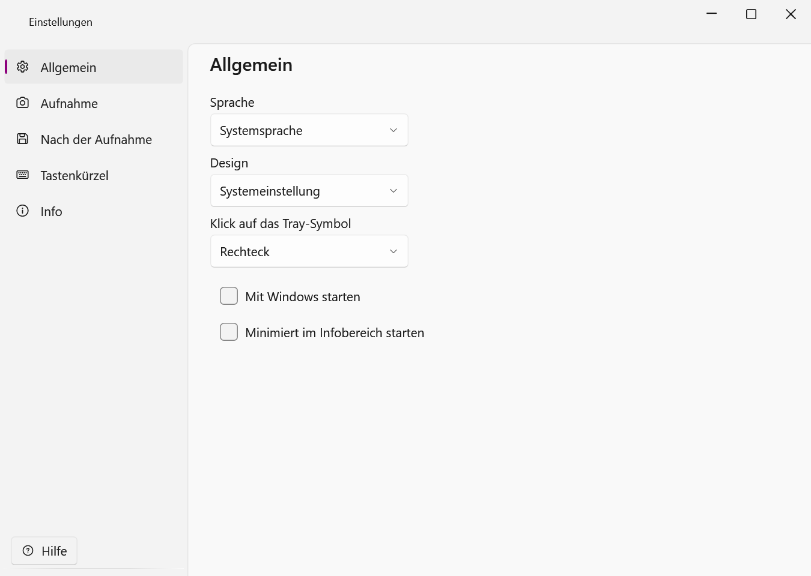
- Sprache: Systemsprache, Deutsch oder Englisch (wird nach einem Neustart wirksam). Die Hilfe öffnet sich in der eingestellten Sprache.
- Design: Systemeinstellung, Hell oder Dunkel.
- Klick auf das Tray-Symbol: welcher Aufnahmemodus startet, Startfenster öffnen oder keine Aktion.
- Mit Windows starten und Minimiert im Infobereich starten (ohne Startfenster).
Aufnahme
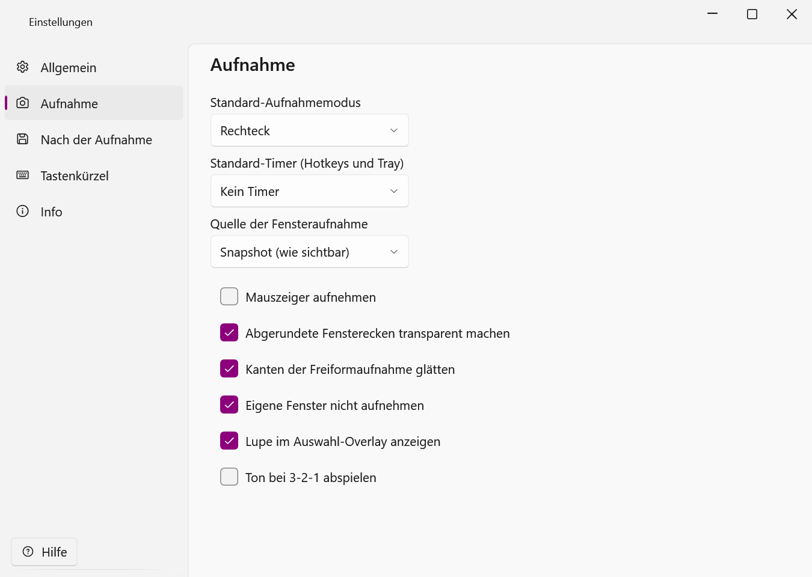
- Standard-Aufnahmemodus und Standard-Timer (für Tastenkürzel und Tray).
- Quelle der Fensteraufnahme: Snapshot (wie sichtbar) oder Fensterinhalt (auch verdeckte Teile).
- Mauszeiger aufnehmen.
- Abgerundete Fensterecken transparent machen (Windows 11).
- Kanten der Freiformaufnahme glätten.
- Eigene Fenster nicht aufnehmen.
- Lupe im Auswahl-Overlay anzeigen.
- Ton bei 3-2-1 abspielen (Timer).
Nach der Aufnahme
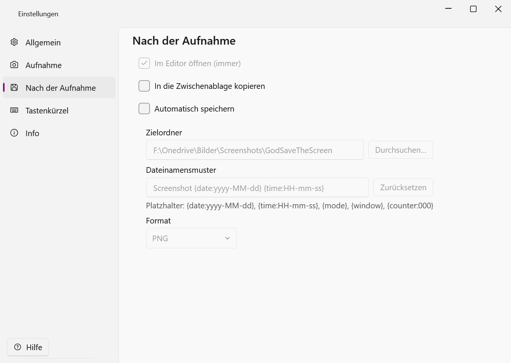
- Im Editor öffnen, In die Zwischenablage kopieren und Automatisch speichern – einzeln ein- und ausschaltbar.
- Zielordner und Format für das automatische Speichern.
- Dateinamensmuster mit Platzhaltern:
Zurücksetzen stellt das Standardmuster Screenshot {date:yyyy-MM-dd} {time:HH-mm-ss} wieder her.
Platzhalter Bedeutung {date:yyyy-MM-dd} Datum (Format frei wählbar) {time:HH-mm-ss} Uhrzeit {mode} Aufnahmemodus {window} Titel des aufgenommenen Fensters {counter:000} Fortlaufende Nummer
Tastenkürzel
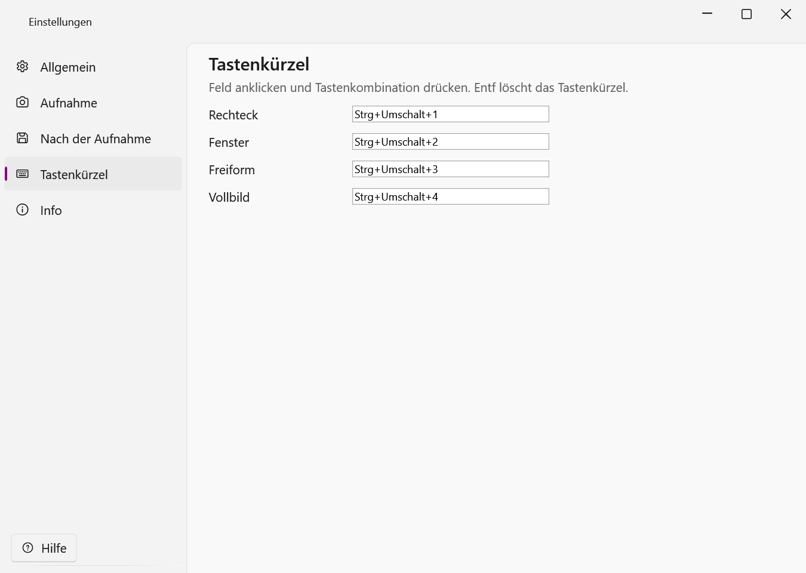
Klicken Sie in ein Feld und drücken Sie die gewünschte Tastenkombination; Entf löscht das Kürzel. Neben jedem Feld steht, ob das Kürzel aktiv ist oder bereits von Windows bzw. einem anderen Programm belegt wird. Für die Druck-Taste gibt es einen direkten Link zur passenden Windows-Einstellung (siehe Druck-Taste).
Info
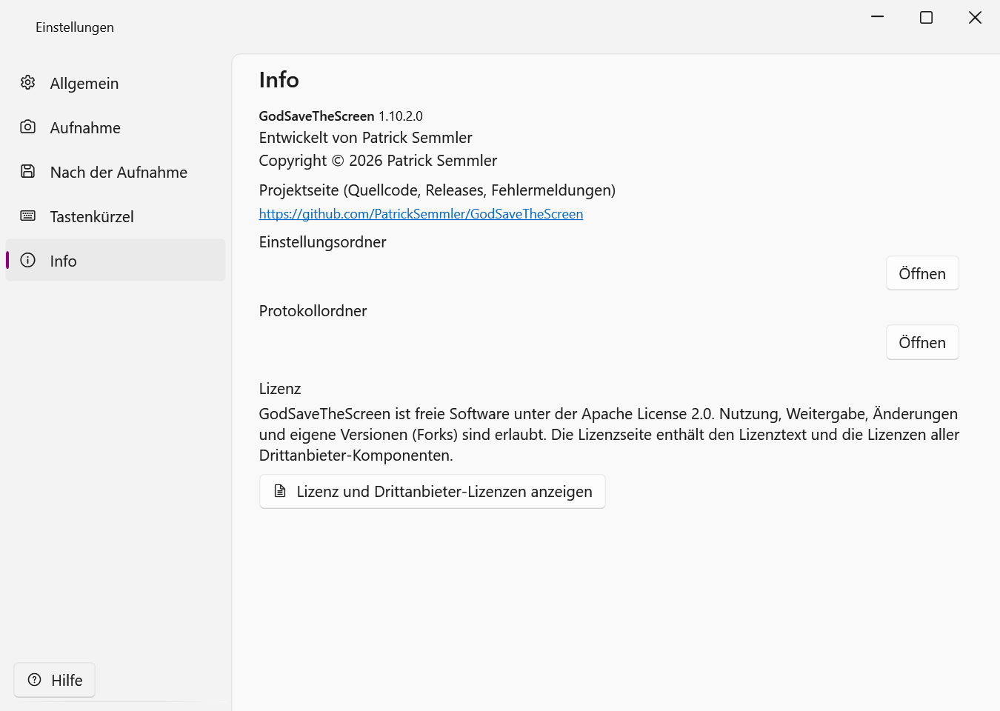
Zeigt Programmversion, Entwickler und den Link zur Projektseite auf GitHub (Quellcode, neue Versionen, Fehlermeldungen), öffnet den Einstellungsordner und den Protokollordner und zeigt Copyright und Lizenz. Lizenz und Drittanbieter-Lizenzen anzeigen öffnet die Lizenzseite im Browser: Kurzfassung der Apache License 2.0, Hinweise für Forks, der vollständige Lizenztext und alle Drittanbieter-Komponenten mit ihren Lizenzen.
Tastenkürzel
Die vollständige Liste – mit Ihren eigenen globalen Tastenkürzeln und Suchfeld – zeigt Strg+F1 jederzeit im Programm an.
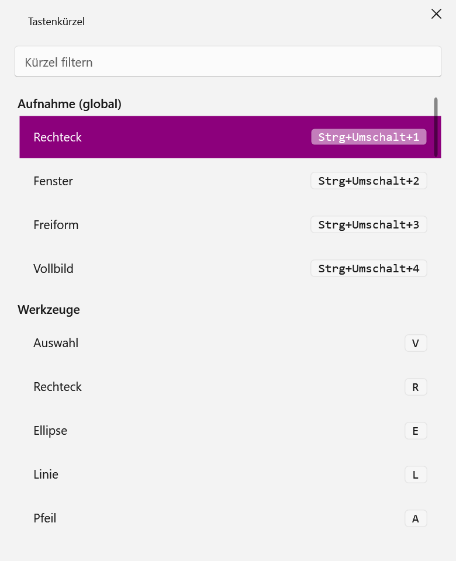
Hilfe und Aufnahme
| F1 | Diese Hilfe öffnen |
| Umschalt+F1 | Hilfe zum aktuellen Werkzeug, zur Auswahl oder zur Einstellungsseite |
| Strg+F1 | Alle Tastenkürzel anzeigen |
| Strg+Umschalt+1 … 4 | Aufnahme Rechteck / Fenster / Freiform / Vollbild (Standard, änderbar) |
Im Editor
| Datei | |
| Strg+O | Öffnen |
| Strg+S / Strg+Umschalt+S | Speichern / Speichern unter |
| Strg+V / Strg+Umschalt+V | Einfügen / Bild als Objekt einfügen |
| Bearbeiten | |
| Strg+Z / Strg+Y | Rückgängig / Wiederholen |
| Strg+C / Strg+Umschalt+C | Kopieren (Auswahl oder Bild) / Bild kopieren |
| Strg+X / Strg+D / Entf | Ausschneiden / Duplizieren / Löschen |
| Strg+A | Alles auswählen |
| Strg+] / Strg+[ | Eine Ebene nach vorn / hinten (mit Umschalt: ganz) |
| Ansicht | |
| Strg++ / Strg+- | Vergrößern / Verkleinern (auch Strg + Mausrad) |
| Strg+0 / Strg+1 | Einpassen / 100 % |
| Leertaste + Ziehen | Ansicht verschieben |
| Strg+R | Lineal ein/aus |
| Objekte | |
| Tab / Umschalt+Tab | Nächstes / vorheriges Objekt |
| Pfeiltasten | Verschieben um 1 px (mit Umschalt 10 px) |
| Alt+Pfeiltasten | Größe um 1 px ändern (mit Umschalt 10 px) |
| [ / ] | Drehen um 15° |
| Umschalt+H / Umschalt+V | Emoji oder Bild horizontal / vertikal spiegeln |
| Bereiche entfernen und Zuschneiden | |
| Umschalt / Alt | Zur Bereichsauswahl hinzufügen / abziehen |
| Entf / Strg+Umschalt+I | Bereich entfernen / Auswahl umkehren |
| Alt / [ ] | Hintergrundradierer: wiederherstellen / Größe |
| Eingabe / Esc | Zuschnitt übernehmen / abbrechen |
Die Tasten der Werkzeuge stehen in der Werkzeugübersicht.
Tipps und Problemlösung
Ein Tastenkürzel funktioniert nicht
Wahrscheinlich ist die Kombination bereits von Windows oder einem anderen Programm belegt. Unter Einstellungen → Tastenkürzel sehen Sie den Status jedes Kürzels und können eine andere Kombination wählen. Bei gesperrtem Bildschirm reagieren die Kürzel bewusst nicht.
Die Druck-Taste öffnet das Snipping Tool
Schalten Sie in Windows unter Einstellungen → Barrierefreiheit → Tastatur die Option „Druck-Taste zum Öffnen der Bildschirmaufnahme verwenden“ aus und weisen Sie die Taste danach unter Tastenkürzel zu.
Vertrauliche Daten sicher entfernen
Verwenden Sie Schwärzen statt leichter Unschärfe und geben Sie nur exportierte Bilder weiter, keine Projektdateien.
Sehr große Bilder
Vor dem Öffnen sehr großer Bilder (über 100 Millionen Pixel) fragt GodSaveTheScreen nach, da die Bearbeitung viel Arbeitsspeicher braucht.
Die Hilfe öffnet sich nicht
Die Hilfedateien GodSaveTheScreen-Hilfe.html und GodSaveTheScreen-Help.html müssen im selben Ordner wie GodSaveTheScreen.exe liegen. Geöffnet werden sie mit dem Standardbrowser.
Verteilung in Firmen
Für Gruppenrichtlinien, Intune oder SCCM gibt es GodSaveTheScreen-…-x64.msi (bzw. -arm64.msi). Es installiert ohne Angabe nur für den ausführenden Benutzer; für alle Benutzer ALLUSERS=1 setzen. Die Sprache (Deutsch/Englisch) wählt Windows automatisch.
- Für alle Benutzer, still: msiexec /i GodSaveTheScreen-…-x64.msi /qn ALLUSERS=1
- Anderer Ordner: INSTALLFOLDER="D:\Tools\GodSaveTheScreen"; ohne Startmenü-Verknüpfung: STARTMENUSHORTCUT=0
- Setup-EXE still: GodSaveTheScreen-…-Setup.exe /quiet InstallScope=PerMachine, dazu InstallFolder="D:ToolsGodSaveTheScreen" und StartMenuShortcut=0 (/? zeigt alle Schalter)
Neuere Versionen ersetzen eine vorhandene Installation derselben Art (für den Benutzer bzw. für alle) automatisch und behalten ohne Angabe deren Ordner und Startmenü-Wahl; die Einstellungen der Benutzer bleiben erhalten.
Fehler melden
Bei Problemen helfen die Protokolle weiter. Den Protokollordner öffnen Sie unter Einstellungen → Info. Fehler und Wünsche können Sie auf der Projektseite (ebenfalls unter Info) melden.